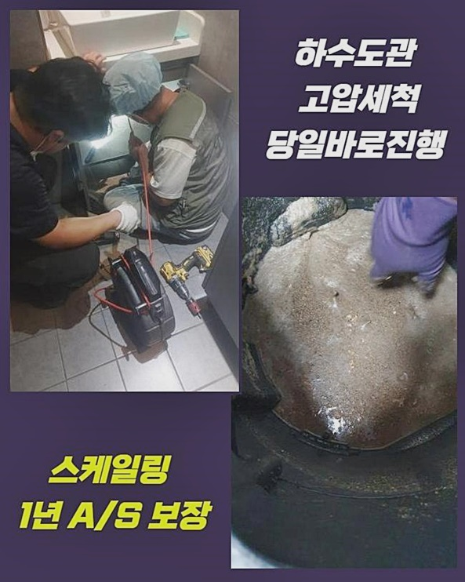
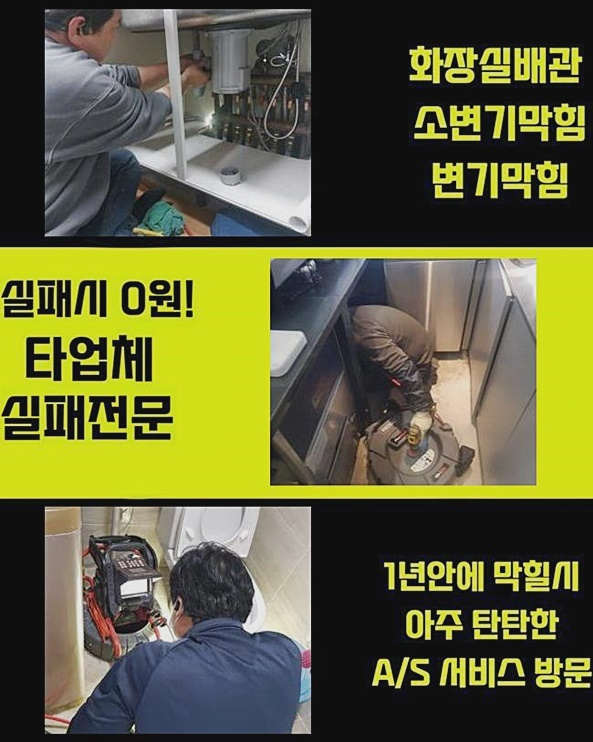
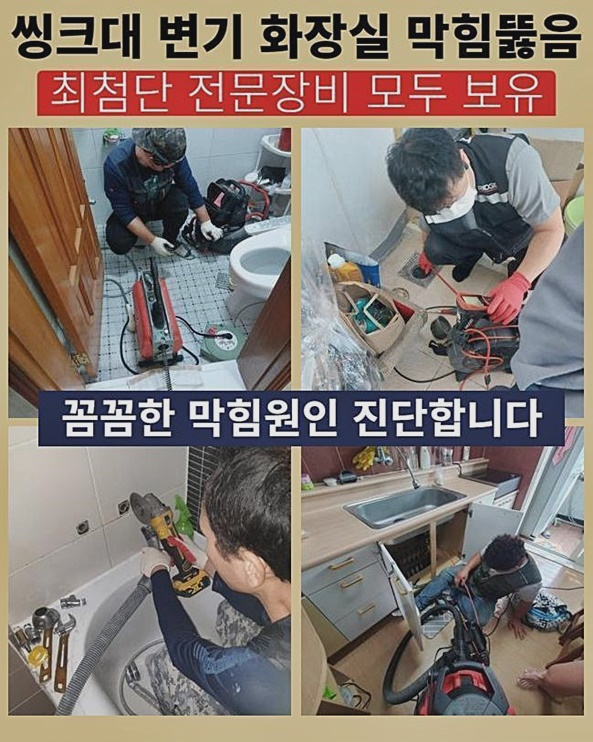
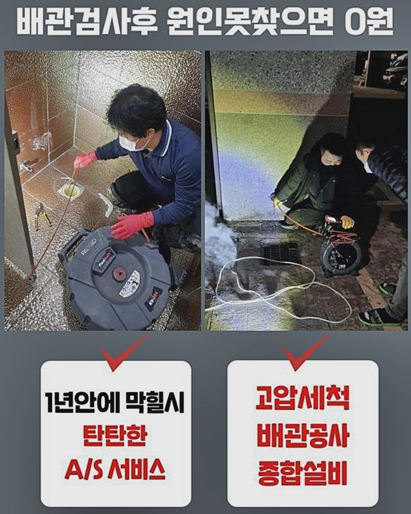
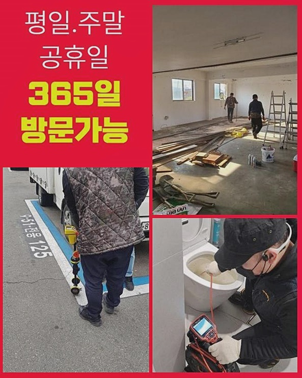
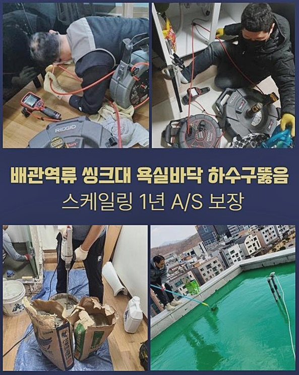
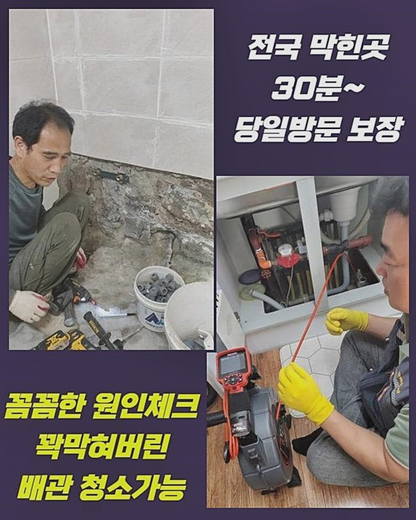

🏠 인천 연희동욕실역류 왕길동 하수구뚫어주는업체 수리업체
인천 변기막힘 전문 시공 후기

📋 작업 개요
- 위치: 인천
- 서비스 유형: 변기막힘, 하수구막힘, 배관막힘, 맨홀막힘, 누수수리, 역류해결, 뚫는업체, 배관청소, 고압세척
- 작업 일시: 2024. 7. 10. 9:19
- 업체명: 하수구수사대 (010-5615-2118)
🔍 문제 상황
인천 연희동욕실역류 왕길동 하수구뚫어주는업체 수리업체
오늘의 주제는 하수관이 꽉 막혀 힘들어하셨던 한 고객분의 사례를 소개하려합니다
오래된 빌라에서 배수구에 장애들이 생겨 차오르는 양상에 놓이게 된 사례자분은 집에 가지고 있던 도구들을 이용해 수리를 해보려고 해보았으나 외려 상태를 좋지 않게 만들었어요
저희팀이 신속하게 방문해서 진단해 본 바로는 화장실쪽 배관이 이물질로 가득차서 배수가 원만하게 안되는걸로 진단했습니다
이번 현상으로 의뢰인의 집에는 누수는 없었는데요, 막혀있는 하수구를 고칠 수 없는 부분으로 경력자의 손길이 간절한 순간이었습니다
오후 시간에 연락이 닿았고 신속하게 현장에 방문해서 고객님하고 의논을 하게되었습니다
그간의 상황에 대해 다양한 사례를 들었는데, 배수 불량이 문제로 보여졌습니다
저희의 경우 세부 사항과 이유를 찾기 위해서 적극적으로 스토리를 경청하였고 말씀을 토대로 해결책을 모색하기위해 애쓰고 있습니다
따라서 저희들은 이런 사례들을 바탕으로 거듭 발전해 나가고 있어요
무엇보다도 배수 불량의 고민을 해결할때는 사용되는 장비가 아주 중요하게 작용합니다
전문가들은 내시경장치와 석션기기로 인식되고 있는 최신기술의 기기를 소유하였기에 우수성을 확립 중 입니다
유명한 세제를 사용했음에도 불구하고 배수가 되지 않으니 불편하셨다고 했습니다
물이 빠지지 않는 현장에 도착해서 점검해보니 정말 바깥에 위치한 배관이 막힌것으로 판명되었습니다

🔎 원인 분석
💡 전문가 진단: 정밀 진단 장비를 사용하여 슬러지의 고착 여부를 판명하고 타격/세척 작업을 실시했습니다.
공동 배수관은 지름이 크며 폭이 넓기때문에 막혀있는 곳을 바로 뚫는 것은 까다로운 일이었습니다
이로 인해 강한압력으로 세척을 진행해 드렸습니다
강력한 수압으로 세척을 하고 나니 문제점들이 해소되었으며 큰 이슈도 나타나지 않았어요
이 상가의 경우 여러가구가 같이 사용하고 있는 형태이므로 한 세대뿐만 아니라 여러 가정에 동일한 이슈가 발견되는 경우가 자주있습니다
이 같은 상황에선 배관이 연결되는 곳에서 해결해야합니다
다수의 가정이 함께 쓰는 하수관은 일정한 기간마다 청소와 관리를 실시하는 것이 중요한 일입니다
더욱이 이 점포가 입점한 건물에서는 비슷한 현상을 겪은 근처 점포들이 다수 있었습니다
인근 가게들은 수도들을 사용할 수 없다보니 매장 영업에 어려움이 생겼으며 동일 층에 있는 여자 변기도 마찬가지로 배관이 막히며 쓸 수 없었어요
이 같은 문제는 매장운영을 할 때 큰 피해를 끼치기 때문에 신속히 조치들이 필요합니다 배수관 막힘 현상은 빌딩의 건축구조와 인근 환경등의 여러가지 원인을 통해 나타납니다
그렇기 때문에 점검을 진행할 때 여러가지 부분을 고려하며 진행해야 합니다
우리팀은 신속히 현재 막힘의 주요 이유를 파악되었습니다
상가의 저층 배수관이 현재 배수장애의 가장 큰 이유였습니다
그러나 맨홀에서 파악하기가 힘들어서 초기에는 발견하기 어려웠습니다

🔧 작업 과정
하수관 고압청소 작업을 실시하려고 장비를 셋팅했지만 오물이 다수 누적되어 있었어요
결론적으로 부가적인 조치들이 요구됩니다
저희들은 의뢰자분의 곤란을 돕기 위해 완벽하게 애쓰고 있습니다
근래에는 근방에서 막혀있는 하수구를 해결하려고 고압의 물청소를 실행했습니다
이물질들을 성공적으로 배출해야 하기 때문에 강한 압력을 적용하여 배관에 영향을 주지 않고 철저하게 배수고민을 해결했습니다
수리가 복잡해서 고단했지만 숙련된 베테랑이라 정확하고 속도감있게 수리를 마쳤어요
의뢰주신 가구와 함께 이웃들의 문제도 동시에 해결하여 모든 사람들의 충족을 이끌어낼 수 있었습니다
하수관에 따라 오수구를 깨끗히하고 깔끔한 공간을 보존하기 위해 노력을 기울입니다
연락주신 분의 만족도 향상을 위해 언제라도 빠르고 안전한 수리를 합니다
하수도에 화장지나 비누가 들어갔을 때 관통기구를 이용하여 이물질들을 미는 계획을 적용합니다
그러나 방문드려 조사하고 나니 생활 하수가 배출되지않고 분명하게는 역류하여 하수배관에 이상이 있을 확률이 크다고 점검되었습니다
따라서 티슈등이 아닌 하수 배관에 이상이 발생한 것으로 판단되었기 때문에 다른 가구들도 동일한 이슈가 생기는지 조사하기 위해 관리실에 문의를 드려 철저히 조사를 실행했습니다
그 결과 여러 이웃집에서 배수관의 물이 원활히 물이 빠지지 않는 문제점이 드러나서 공용배관을 확인하니 해당 현장의 하수도 배관에 이상이 나타난 것을 점검되었습니다
그 결과 따라 주민분들께 세부사항을 고지하고 빠른 대응을 해서 문제상황을 해결할 수 있도록 수리하였어요
배수 불량의 이상이 해소되니 이용자분들의 불편을 없앨 수 있었어요
고객에게도 이런 사태에 대해 설명드렸습니다
고객님께서는 이런 위치에 배수 불량이 생겼다는 것을 한번도 예상하지 못했다고 말하셨어요
해당 사례처럼 배관 막힘 현상은 전문가의 손길이 없으면 수리가 쉽지 않습니다
베테랑이 아니면 문제 파악이 쉽지 않습니다
물론 전문가들은 여러경력을 보유한 숙련자들로 구성되어서 어느 배관이든 말끔히 정비 할 수 있습니다
문제 현장에 출동한 전문 기사님도 다년간의 경험을 가진 노련한 엔지니어입니다


✅ 작업 완료
우리 업체는 이런식으로 능숙한 베테랑들로 구축되어 있어요
그렇기 때문에 상업 장소 또한 정비를 실시해드리지만 주거유형에 관계없이 배관 장애를 늘 개선했었습니다
배관이 막힌 환경에선 강한 청소약품이나 기다란 막대기등의 공구를 사용해서 문제상황을 해결하고자 하는 접근은 사실상는 하수관에 파손 위험을 발생시킬수 있어 신중함이 필요합니다
이로 인해서 물이 내려가지 않으면 신속하게 기술자를 불러서 진단을 받는것이 필요합니다
배관수리 팀은 고객분들의 문제상황을 빠르고 효율적으로 해결해드릴 것을 말씀드립니다
배수문제로 스트레스를 받으신다면 언제나 저희 배관 수리팀에 상담을 요청해주세요




⚠️ 베란다 누수 및 방수 관리 방법
- ✅ 비가 많이 올 때 창틀 주변이나 아래층 천장에 얼룩이 생기는지 정기적으로 확인해 보세요.
- ✅ 우수관 주변 실리콘 마감이 들뜨거나 깨진 틈새가 있는지 손상 여부를 수시로 체크하세요.
- ✅ 베란다 바닥 타일의 줄눈(메지)이 소실되면 그 틈으로 물이 침투하여 누수가 유발됩니다.
- ✅ 누수 의심 증상 발견 시 방치하면 아래층 손실이 커지므로 즉시 전문가의 진단을 받으십시오.
💡 핵심 정리
- 확실한 장비 작업(내시경 점검 및 샤프트 스케일링)으로 원인을 뿌리 뽑습니다.
- 작업 후 1년 이내에 동일한 부위 재발 시 100% 무상 A/S 서비스를 보장합니다.
- 서울 · 경기 · 인천 전 지역에 24시간 언제든 긴급 출동할 수 있도록 항시 대기 중입니다.
❓ 자주 묻는 질문 (FAQ)
🚨 인천 변기막힘 문제로 고민이신가요?
정확한 원인 진단과 확실한 시공으로 재발 없는 해결을 약속드립니다.
24시간 긴급 출동 | 서울 · 경기 · 인천 전지역 | 1년 내 재발 시 무상 A/S